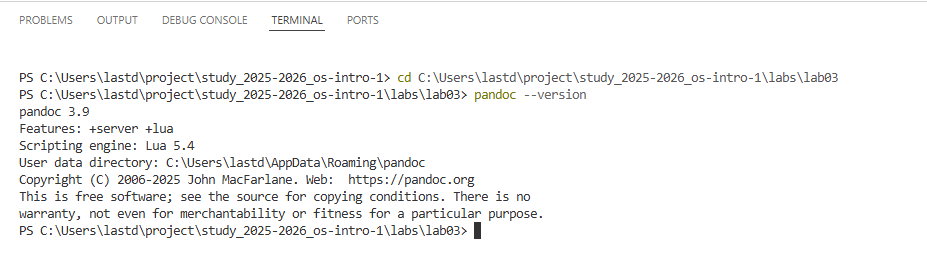
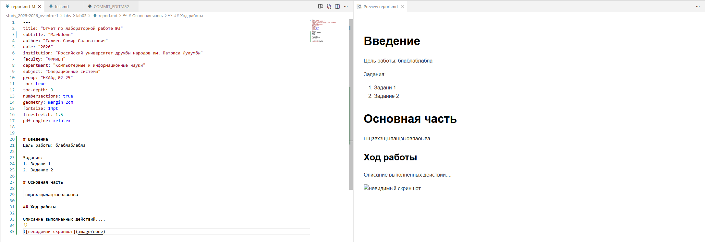
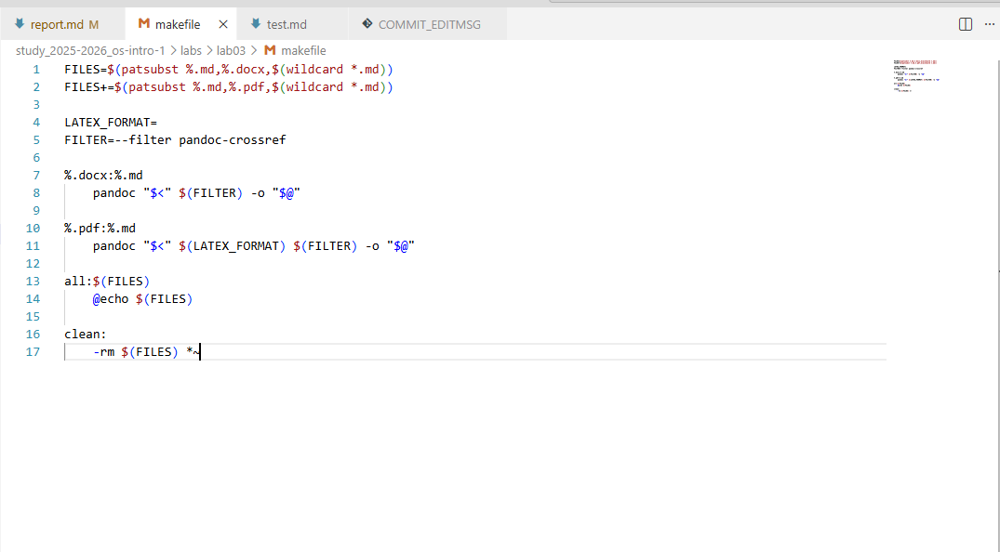
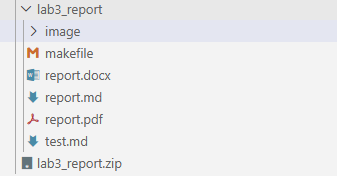
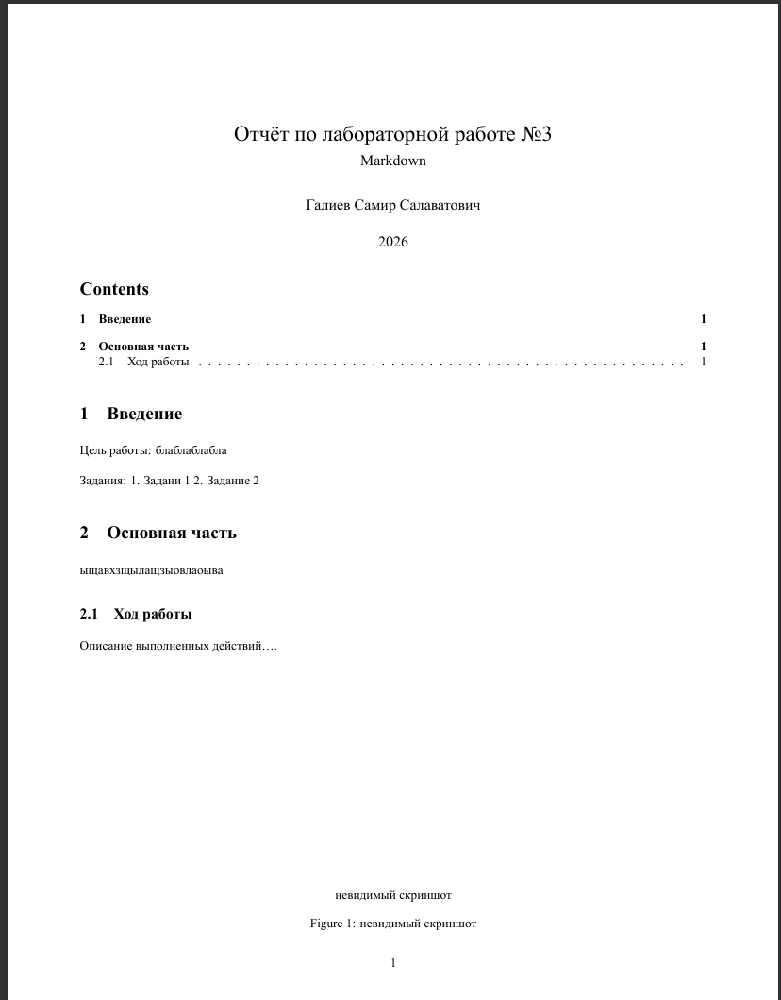

Современные исследования требуют быстрого оформления
документации
Markdown позволяет создавать читаемый текст с минимальной
разметкой
Единый исходный файл конвертируется в несколько форматов
Автоматизация через Makefile экономит время при подготовке
отчётов
Объект и предмет
исследования
Язык разметки Markdown как инструмент документирования
Процессор Pandoc для конвертации форматов
Фильтры pandoc-crossref и pandoc-citeproc для научных работ
Цели и задачи
Цель: Научиться оформлять отчёты с помощью
Markdown
Задачи: - Освоить базовый синтаксис разметки -
Настроить окружение для конвертации - Создать шаблон отчёта по ГОСТ
7.32-2001 - Автоматизировать сборку через Makefile
Материалы и методы
Исходный формат: Markdown (.md)
Процессор: pandoc с фильтрами
Результирующие форматы:
PDF (через LaTeX/beamer)
DOCX (для редактирования)
Автоматизация: Makefile
Выполнение лабораторной работы
Была произведена установка программного обеспечения: 1. Установлен
Pandoc с официального сайта. 2. Скачаны и настроены фильтры
pandoc-citeproc и pandoc-crossref. 3.
Проверена работоспособность через консоль.
Рис. 1. Проверка версии Pandoc в терминале.

Проверка версии Pandoc
Создание исходного файла
Был создан файл report.md. В нём реализована структура
отчёта: титульная информация (через YAML заголовок), разделы, списки,
формулы и ссылки на изображения.
Рис. 2. Структура файла report.md в редакторе.

Исходный код файла
Настройка Makefile
Для автоматической конвертации создан файл Makefile. Он
содержит правила для сборки .pdf и .docx
версий документа с использованием необходимых фильтров.
Рис. 3. Содержимое файла Makefile.

Файл Makefile
Конвертация и сборка
С помощью команды make all произведена сборка проекта. В
результате были получены файлы report.pdf и
report.docx.
Рис. 4. Результат работы команды make в
терминале.

результат сборки
Рис. 5. Итоговый PDF документ.

Открытый PDF файл
Ответы на контрольные вопросы
Вопрос 1: Какие инструменты необходимы для
конвертации Markdown в PDF с поддержкой перекрёстных ссылок?
Ответ: Для этого необходим Pandoc, а также фильтр
pandoc-crossref, который подключается через флаг
--filter.
Вопрос 2: Как в Markdown оформить выключную формулу
с меткой для ссылки? Ответ: Необходимо использовать
конструкцию $$...$${#eq:label}, где label —
уникальный идентификатор формулы. Ссылка на неё ставится как
[-@eq:label].
Вопрос 3: В каких форматах согласно заданию должен
быть предоставлен отчёт? Ответ: Отчёт должен быть
предоставлен в трёх форматах: .md (исходник),
.pdf и .docx, упакованных в архив вместе со
скриншотами и Makefile.
#Вывод
В ходе выполнения лабораторной работы № 3 были освоены навыки работы
с языком разметки Markdown. Я научился: - Использовать базовый синтаксис
(заголовки, списки, форматирование текста). - Вставлять математические
формулы и код. - Настраивать автоматическую конвертацию документов с
помощью Pandoc и Makefile. - Оформлять документацию в соответствии с
требованиями ГОСТ (структура отчёта).
Полученные навыки могут быть применены для написания курсовых и
дипломных работ, а также для ведения технической документации.